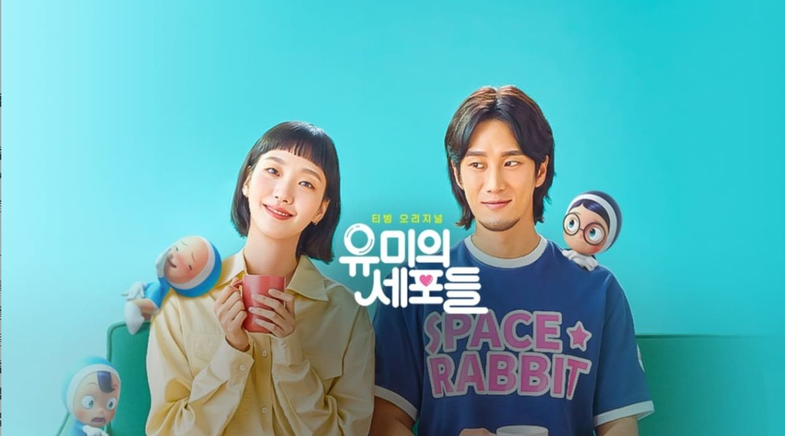
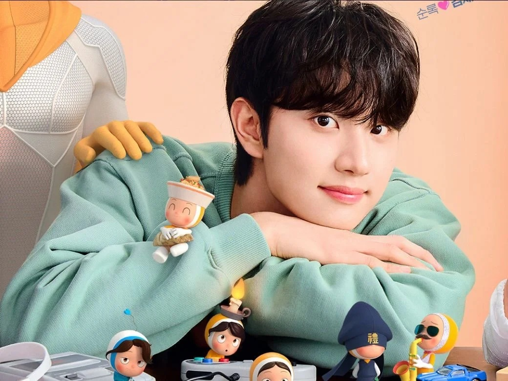

具雄 / Goo Woong
直男程式設計師
簡單直率的腦袋讓嘴饞細胞天天吃飽，卻也曾讓愛情細胞受盡委屈，是讓由美初次體會深刻戀愛的起點。

CELL VILLAGE《柔美的細胞小將》全三季是一部橫跨五年的經典成長愛情劇。這是一部將「大腦擬人化卡通」與「真人職場戀愛」完美結合的女性人生成長史。故事核心不只是柔美談了三段戀愛，而是她透過這三位男主角，讓大腦中的「核心細胞」輪流執政，在經歷昏迷、斷頭、進化與重生後，最終明白「自己才是人生的特級主角」的療癒故事。

24 小時不休息的村莊大腦，負責分析現況、壓制暴走，但一到深夜經常被感性細胞擊潰。
頭上頂著年糕的食慾擔當，只要它一醒來，全村的警報器都會大響，甚至能直接支配大腦。
負責流淚與浪漫，到了凌晨一點戰力會直接爆表，常常逼著理性細胞寫出一些煽情的心情日記。
村裡的穿搭與品味美感指標，掌控著由美的錢包，雖然常常因為刷卡過度被理性細胞送進監獄。
最神聖的原生核心細胞，代表由美全心全意去愛一個人的勇氣，曾因心碎陷入昏迷而再次甦醒。
披著福爾摩斯斗篷，擅長過度分析對方的一舉一動與眼神，雖然最後常常推理出完全錯誤的爆笑結論。
當壓力與焦慮破表時就會從地底爬出來的暴走細胞，只要它一拉下警報，整個村莊都會陷入失控。
腦袋裡充滿深夜級幻想的害羞細胞，只要一遇到心動對象的肢體接觸，就會興奮到頭頂冒煙。